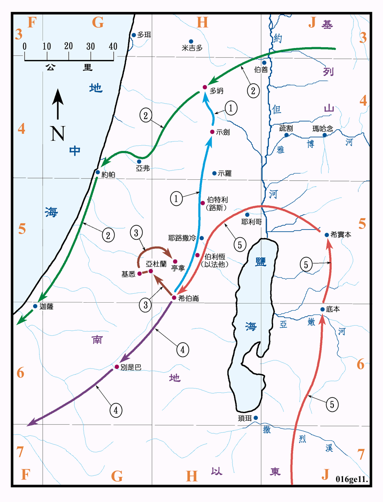

1915～1805BC

行动线说明
| 序号 | 圣经 | 说明 |
|---|---|---|
| 1 | 创37:13 | 约瑟被差遣到示剑去查看他的兄长们牧羊，到多坍才会见他们，但被他们丢在坑里。 |
| 2 | 创37:25-36 | 约瑟被他的兄长卖给从基列来的米甸商人，再被米甸人带去埃及，卖给埃及的大臣波提乏为奴。 |
| 3 | 创38章 | 犹大的故事。 |
| 创41:39-49 | 约瑟被法老王重用，政绩斐然。法老将安城祭司的女儿给他为妻，生了两个儿子，一个叫玛拿西，一个叫以法莲。 | |
| 创42:1-45:15 | 迦南地因饥荒，雅各令儿子们去埃及去籴粮，在埃及与约瑟重逢。 | |
| 4 | 创46:1-47:12 | 约瑟接父亲雅各全家到埃及，受法老的厚待。(参看创图03) |
| 创47:13-26 | 约瑟的政绩。 | |
| 5 | 创50:7-14 | 约瑟将雅各的遗体运回希伯仑。(参看创图03) |
| 创50:20，出13:19，书24:19 | 约瑟在一百一十岁时去世，在摩西带以色列人出埃及的时候，将他的骸骨，带回示剑安葬。 |
1915BC 约瑟出生，17 岁 (1898BC) 被卖到埃及，1885BC 约瑟高升，於110岁 (1805BC) 时去世。
雅各一家是长期定居在希伯仑的，但他们曾远至一百馀公里以外的多坍放牧，可见他们活动范围之广。以实玛利人和米甸人在<创图07>的说明中已有介绍。
约瑟约是在埃及第十二王朝、法老王西奴色二世 (1894至1878BC) 时到达埃及的，他任官直到西奴色三世 (1878至1841BC) 或更久。当时是埃及中王国 (1991至1778BC) 的初期，在此两百馀年间，是埃及的黄金时代，自十二王朝起，定都孟斐斯，大兴建设，曾大量开掘水井，建 渠道和大蓄水池作灌溉之用，又挖掘开通尼罗河和红海间之运河，如此就化大量荒芜的沙漠为良田，增加了人民的财富。又因建 的活动众多，就在西乃半岛开采铜矿和石材。又开辟商路和海运，商务远至索马利亚、革哩底、叙利亚和迦南等地，军事方面则扩至尼罗河第三瀑布，使努比亚成为他们在南方要塞，也是贸易的殖民地。在文学方面，也留下一些伟大的作品，教育方面也有一些技术学校的设立。约瑟必然也参与了这些伟大的建树，而有不少的功绩。
歌珊地疆界和大小不明，大约是在尼罗河三角洲的东部，农牧皆宜，非常富庶，是埃及最好的地。
约瑟活了110岁，他的骸骨在四百年后，以色列人出埃及时带回示剑安葬。